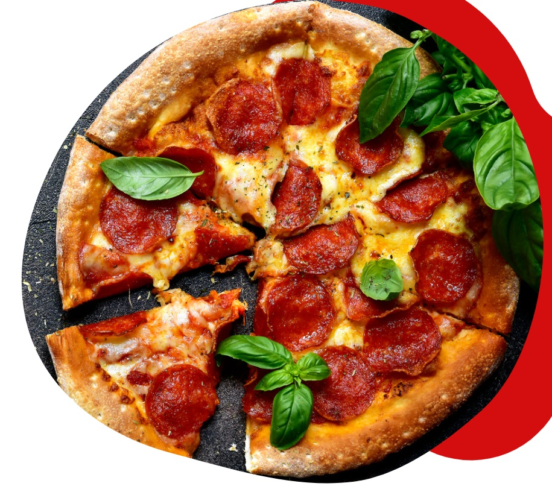
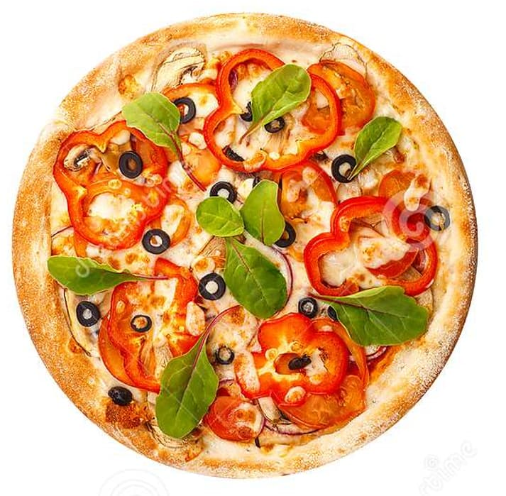
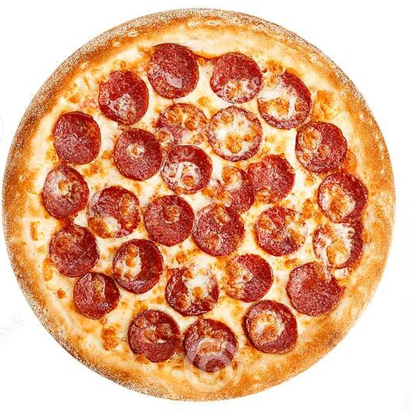
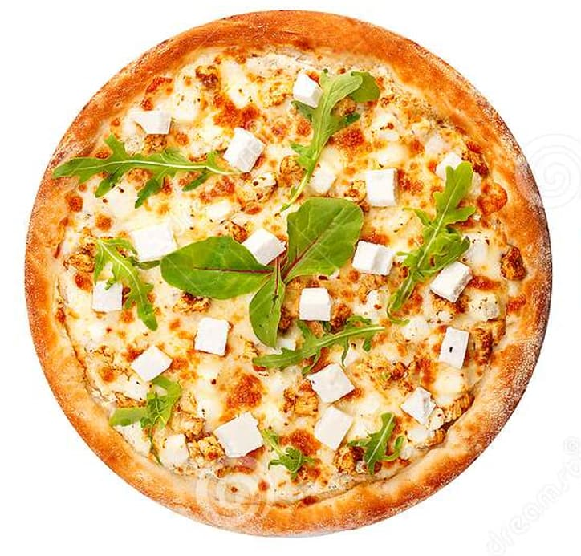
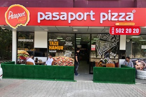
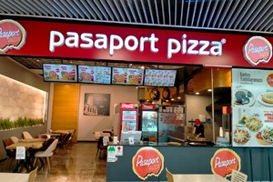
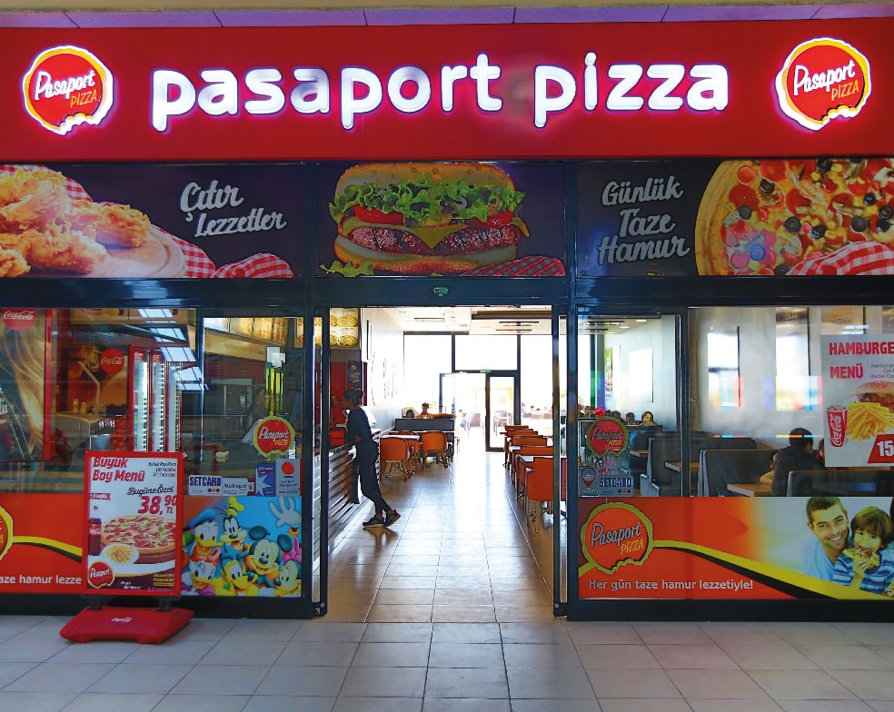
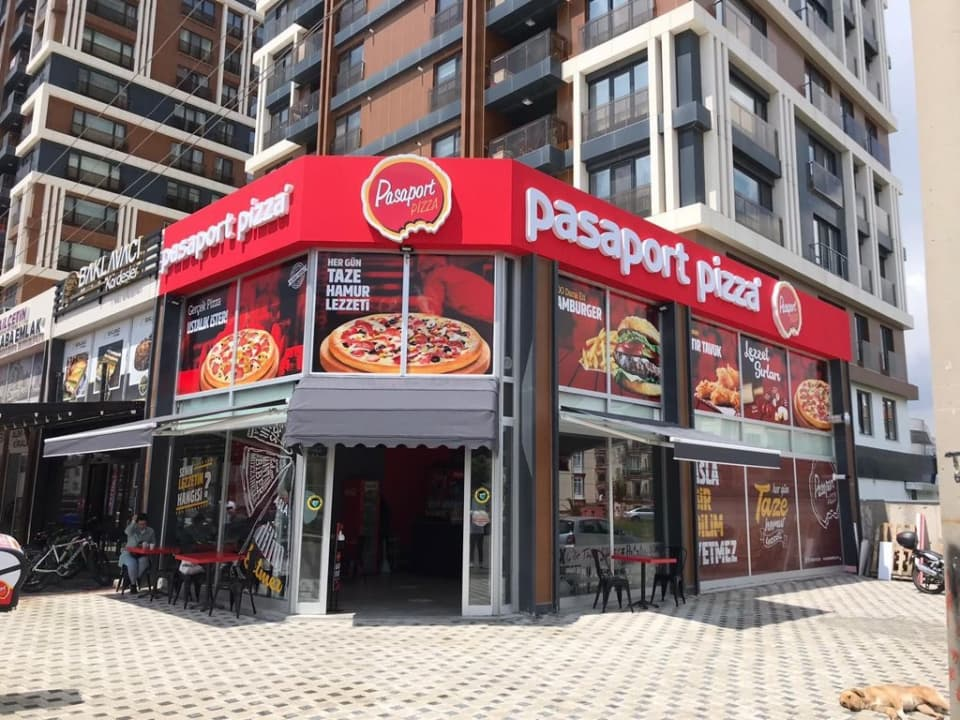

BEST HOMEMADE PIZZA IS HERE
THE BEST PİZZA İN THE TOWN
-
FRESH INGREDIENTS
It’s not hard to tell the difference between a cheap frozen pizza and a freshly made one. Nothing can quite beat the flavors of pizza with fresh sauce and toppings sitting atop a crust that was baked today.
-
INCREDIBLE CRUST
Thin crust, regular crust, hand-tossed, or pan crust — everyone has their own preference. But no matter how you want your crust to turn out, the most important aspect to a good crust is an excellent dough recipe.
-
CHEESE-LOTS OF IT!
To a lot of pizza lovers, cheese is the star of the show. Some people don’t even need toppings to enjoy a slice, which is why the 4 cheese pizza option is available in many pizza places.
-
SUPERB TOPPINGS
Toppings give pizzas their own distinct flavors. So if a restaurant has a menu full of topping selections, all of them should be good, fresh, and high-quality.
OUR MENU
- 
- 
- 
OUR BRANCHES
-

Bronx
502 202 908
-

New York
917 683 5770
-

Brooklyn
472 698 2132
-

Queens
475 861 5412